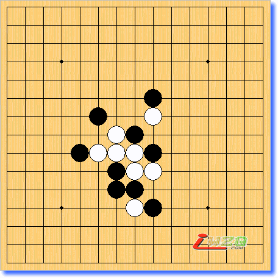

坂田吾朗《简明图解五子棋》连珠排局之高级题【共10题】
#1 坂田吾朗《简明图解五子棋》连珠排局之高级题【共10题】 作者：KOFLEO 发表时间：2006-11-30 21:16:42
连珠对局最后经常是以连续进攻直至取胜而结束，提取这个连续进攻过程的精髓，去掉和进攻无关的赘子，就是我们所说的“连珠排局”。因此，若能提高连珠排局的实力，实战水平也会大有提高。下面我们为您提供初级、中级、高级连珠排局各10例。我认为初级排局是一看就能解开的；中级排局稍加思考也能解开；高级排局只要努力钻研也能看透，怎么都看不透时，请看看对应提示，然后再深入思考一下。
即使你看了解答，如果能看懂和理解取胜的步骤，你的棋力也会有很大提高。
与实战不同，连珠排局攻方必须连续进攻，攻着若不能连续进行，就告失败。因此，在连续进攻时，也要考虑对方防着的各种变化的对付方法。
【日】坂田吾朗《简明图解五子棋》
#2 Re:坂田吾朗《简明图解五子棋》连珠排局之高级题【共10题】 作者：KOFLEO 发表时间：2006-11-30 21:21:51
黑先行，四三胜
h8h9g9i7g8g7f7e7i9j9i10i11h11h12k8j12
#3 Re:坂田吾朗《简明图解五子棋》连珠排局之高级题【共10题】 作者：KOFLEO 发表时间：2006-11-30 21:25:31
黑先行，四三胜
h8h9g9h7i8j8i9h10j9k9k10i11h12g11g7f7e6f6
#4 Re:坂田吾朗《简明图解五子棋》连珠排局之高级题【共10题】 作者：KOFLEO 发表时间：2006-11-30 21:27:13
黑先行，四三胜
h8i7h7g8h6h5h9h10i9j10g6f5j5f9f10h11i11k8k11j8
#5 Re:坂田吾朗《简明图解五子棋》连珠排局之高级题【共10题】 作者：KOFLEO 发表时间：2006-11-30 21:30:00
白先行，连叫胜
h8g9i9h7g10f8f9i10i11h11j7i6h6i5g6h5g5
#6 Re:坂田吾朗《简明图解五子棋》连珠排局之高级题【共10题】 作者：KOFLEO 发表时间：2006-11-30 21:32:36
黑先行，四三胜
h8g8g9f8j8f9h11e9g7g10f7i10f6g6h6i7g5e5
#7 Re:坂田吾朗《简明图解五子棋》连珠排局之高级题【共10题】 作者：KOFLEO 发表时间：2006-11-30 21:35:55
黑先行，四三胜
h8g9i7h7h6i6h5i5g5g6f6f4f7e7i9j10j8k9
#8 Re:坂田吾朗《简明图解五子棋》连珠排局之高级题【共10题】 作者：KOFLEO 发表时间：2006-11-30 21:38:21
黑先行，四三胜
h8g9h9f10e11h10i10f8e7i11j12j11j9j10i7i9h6h7g6g7k5j6
#9 Re:坂田吾朗《简明图解五子棋》连珠排局之高级题【共10题】 作者：KOFLEO 发表时间：2006-11-30 21:40:31
白先行，连叫胜

h8g8i7h7f9i6i10i9g6g7g5f7e7h6h5h4i4
#10 Re:坂田吾朗《简明图解五子棋》连珠排局之高级题【共10题】 作者：KOFLEO 发表时间：2006-12-1 13:01:55
黑先行，VCF

h8f7f8e2h9k4j6k7m9o9l10j11i13e12h12e13d10e11
#11 Re:坂田吾朗《简明图解五子棋》连珠排局之高级题【共10题】 作者：KOFLEO 发表时间：2006-12-1 13:07:46
黑先行，VCF
h8h7h10j7l7i10e9j10c11d11a12f14a13h15c15j15d15l14l15m13n14o14o15o13n11o11o10m10a9b9b8c6b5d6a5f5a6f4e4g5g6a2a1b2c1c2d1i1i3k3k4l3l1l4m1o3m2o4n3o6o5o7i13o8